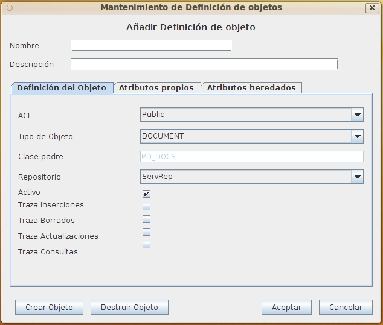
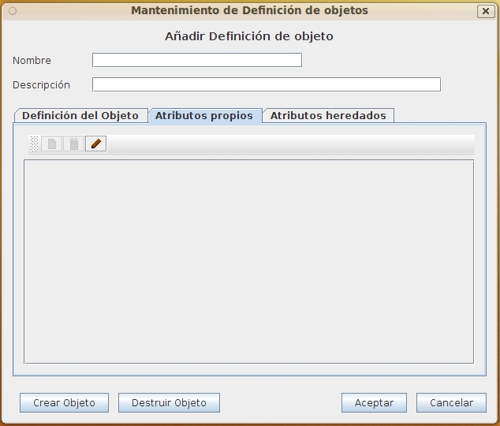

Mantenimiento Definiciones de Objetos
Al seleccionar en el formulario de Lista Definiciones de Objetos las opciones de Alta, Baja, Modificación o Copia de Tipos de objetos aparecerá este formulario con diversos campos activados o desactivados.
La información está estructurada en 3 solapas. La primera contiene la definición del tipo documental, la segunda los metadatos que se asignan a este tipo, y la tercera los metadatos que este tipo hereda de todos los antecesores. Los metadatos totales son la suma de los específicos del tipo y de los heredados. A su vez, estos metadatos totales se transmitirán a los tipos documentales descendientes del actual.
La definición del tipo consta de varias etapas. Primero deberá crearse la definición base, posteriormente puede añadirse metadatos (en la segunda solapa), y por último, una vez confirmada la definición podrá crearse el tipo en el repositorio (por medio del botón crear)para almacenar documentos de ese tipo.
Este formulario contiene la información:
- Nombre identificativo: Identificador del Tipo de objeto cuyo valor no puede repetirse ni cambiar una vez asignado. Puede tener una longitud máxima de 32 caracteres. (Ej. "Testamentos")
- Descripción del tipo de objeto: Descripción que permita ampliar información acerca del uso y sentido del Tipo de Objeto. Puede tener una longitud máxima de 128 caracteres. (Ej.: "Sentencias, recursos, apelaciones y otros documento jurídicos")
- ACL de la definición: Según el ACL asignado, será posible para el usuario modificar la definición del objeto (Ver: ACL). Este ACL no hace referencia a un ACL asignado a los docuemntos de este tipo, que heredarán el ACL de la carpeta elegida si no se les asigna explícitamente uno
- Tipo de Objeto (FOLDER o DOCUMENT): es decir contenedor/carpeta o documento con metadatos y un archivo/contenido. No será nunca editable ya que al seleccionar el tipo padre en la lista viene determinado.
- Clase Padre:Definición "padre" de la que se heredan los atributos (y suxcesivamente hasta el nivel superior de los tipos "base" PD_DOCS o PD_FOLDERS). No será nunca editable ya que al seleccionar el tipo padre en la lista viene determinado.
- Nombre del repositorio:Repositorio en que se almacenarán los documentos de este tipo (Ver: Repositorios)
- Activo:Indicador booleano de si el tipo de objeto está activo. Si no está activo no podrá crearse documentos de este tipo, aunque si g¡hacer operaciones de otro tipo, como buscar.
- Indicadores booleanos de si debe trazarse las operaciones de alta, baja, modificación y consulta

Para mantener la definición de un tipo documental, en la segunda solapa puede añadirse, eliminarse o modificarse la definición de los metadatos en Mantenimiento de Metadatos. Una vez creado el tipo diocumental en el repositorio, NO es posible actualmente modificar la definición.

Ver: Lista Definiciones de Objetos
Índice Ayuda OpenProdoc